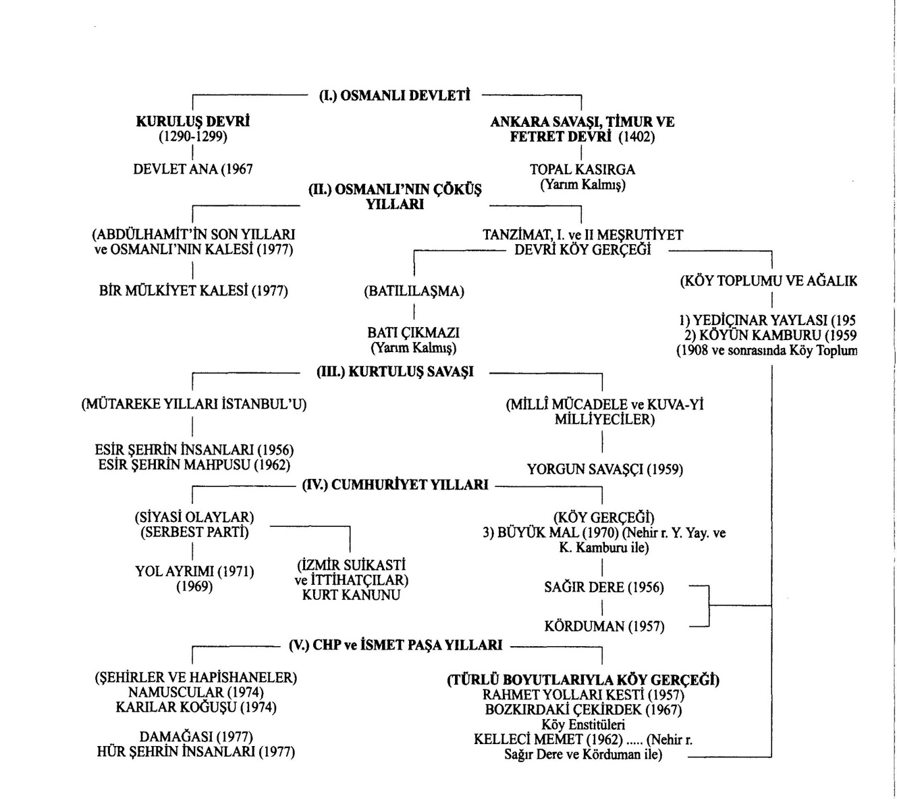

Romanı, "hayatı her cephesiyle geniş olarak kavrayan, her şeyi bir akış, değişme ve gelişme olarak his ve idrâk eden bir duyuş ve görüş tarzının ifadesidir"1 şeklinde tanımlayan Mehmet Kaplan, hayatı her cephesiyle kapsayacak kadar geniş bir türün işlevinin de geniş olacağını işaret ediyor gibidir. Yazarların böyle bir iddia taşımamalarına rağmen roman, ondan bir mesaj çıkarmak isteyen, "nasıl anlattığından çok ne anlattığı"ile ilgili olan bir okur tipi için; yazarının siyasî düşüncesine, kültürel birikimine, gözlemlerine dayanarak, hayatın, toplumun, tarihin yeniden anlamlandırılmasını sağlayan bir tür hâline gelir ve işlevi farklılaşır.
Okur, bir özdeşleyim içinde, kendisiyle aynı düşünce ve ideallere sahip olan bir yazarın yazdıklarıyla bağ kurabilir. Hatta yazarının yaşamında maruz kaldığı kısıtlama ve yasaklara duyulan merak da okurun o yazarla arasında bir ruh akrabalığının kurulmasına neden olabilir. Kemal Tahir, Cumhuriyet dönemi Türk romancıları içinde gerek savunduğu fikirleri romanlarında oluşturduğu tezlerle yansıtma biçimi gerek Marksist oluşu ve hapishanelerde geçirdiği yıllar gerekse Osmanlı devlet ve toplum yapısına olan hayranlığı sebebiyle Türk okurunun her zaman ilgisini çekmiş, bir ideoloji tarafından göklere çıkarılıp diğer bir ideolojinin taraftarlarınca sert şekilde eleştirilmiştir.2
Yazar, zaman zaman romancı olduğu gerçeğini bir yana bırakıp, -Türk tarihine ve toplumuna inanan bir aydın olarak- edebiyat dışı alanlarda tıpkı o alanların uzmanları gibi araştırmalar yapmış, yorumlarını ifade etmiştir. Bu yüzden aldığı eleştirileri de hesaba katacak olursak Cumhuriyet devri Türk romanında en fazla eleştiriye maruz kalan romancımız olduğu söylenebilir. Çalışmamızda ele aldığımız, aslında her biri ayrı bir makale konusu oluşturabilecek başlıklar dâhilinde Kemal Tahir'in topluma sunmaya çalıştığı tezler bakımından diğer yazarlar arasındaki yeri, tezlerine uygun olarak tarihî romanlarında ele aldığı devirler ve insanlar üzerinde durulacaktır.
Kemal Tahir'in Tezleri ya da Hareket Noktaları
Tarihî romanlarının yoğun olarak yayımlandıkları yıllar (1950'lerin sonundan 1970'lerin başı) göz önünde bulundurulacak olursa, Kemal Tahir’in yazdığı romanların ve savunduğu düşüncelerin siyasî ve sosyal açıdan toplumda büyük yankılar yarattığı âşikârdır. Çünkü o, "Batı medeniyeti seviyesinin üstüne çıkma" düşüncesiyle şekillenen cumhuriyet tarihi ve toplumunun tüm eylem ve hatalarını, Osmanlı kimliğinin, devlet ve toplum yapılanmasının terk edilmesiyle kaybedilen değerleri tezler hâlinde romanlarında sertçe dile getirmiştir.3
Doğu'yu özümsemiş bir "ulusal felsefe"nin hayalini kuran Kemal Tahir, Türkiye'de bilinen ve kitaplardan okunan Marksist öğretinin Osmanlı Devleti ve toplumu konusundaki açıklamalarını yetersiz bulduğu için Marksizmi yerlileştirmeye çalışmış; Marksistlerce de eleştirilmiştir. "Batı ku-
|
1. Mehmet Kaplan, Türk Edebiyatı Üzerinde Araştırmalar, Dergâh Yay., İstanbul, 1987, c. 1., s. 362. |
|
2. Özellikle yaşamının son yıllarında, gerek Rahmet Yolları Kesti, Bozkırdaki Çekirdek, Yol Ayrımı, Devlet Ana gibi romanlarındaki eleştirel tavrı, ezber bozuculuğu, put yıkıcılığı sebebiyle, başta Marksistler olmak üzere birçok eleştirmen tarafından eleştirilen Kemal Tahir'in düşüncelerini paylaşanlar bile alayla karşılanmış; hatta onlara -biraz da alay etmek için-"Tahirîler"denilmiştİr. |
|
3. Hatta ölümünden sonra notları arasından toparlanıp yayımlanan (yazarın kendisinin de genç bir avukat kâtibi olarak yer aldığı) Hür Şehrin İnsanları (1976) romanında bile, 1930'lu yıllarda tamamen Batılılaşmış, cinsel tercihlerinde özgür İstanbul kadın ve erkeklerinin içinde yaşadıkları topluma duyarsız, ahlâkî çöküntü İçindeki hâlleri sergilenmiştir. |
rumlarıyla, tarihiyle, kültürüyle bizden farklıdır. Batı kalıpları bizim yerli meselelerimizi çözemez" düşüncesini savunduğu için Batıcı ve Cumhuriyetçilerce topa tutulmuştur. Kurtuluş Savaşı'na ve Atatürk'e resmî tarihin baktığı gözle bakmayan Kemal Tahir, Yorgun Savaşçı romanı sebebiyle de birçok eleştiriye mâruz kalmış hatta film hâline getirilen eser, 1980 darbesinden sonra yakılmıştır.
Yaşadığı dönem (1910-1973) göz önünde bulundurulduğunda Türk toplumunun geçirdiği birçok tarihî ve sosyal çalkantıya, kimlik ve kültür değişimine tanıklık eden Kemal Tahir; bu değişimin eskiyi tamamen "reddetmek" veya "feda etmek" olarak değerlendirildiğini üzüntüyle görmüştür.4 Hapishanede bulunduğu sürede (1938-1950), Osmanlı tarih ve kültürüne, sosyal ve siyasî yapılanmasına ilişkin birçok kitap okuyan5 yazar; Osmanlı’nın, kuruluşundan başlayarak önce Hristiyan Bizans ile sonraki yıllarda Batı toplumlarıyla olan tüm ilişkilerini, Batılılaşmanın getirdiği zararları devir devir ele alan tarihî romanlar kaleme almıştır. 'Osmanlı toplumunun her türlü değeriyle Batı'dan üstün olduğu ve bunun tarih olaylar üzerinden anlatılması gerektiği'ne inanarak romanlarını kurguladığı dikkat çeker. Bu açıdan bakıldığında Kemal Tahir’in tıpkı Tanzimat yazarları gibi, toplumu eğitmek, bilinçlendirmek gibi bir görevi üstüne aldığını söylememiz mümkündür.
Kemal Tahir, Batı'nın kurumlarının ve yaşam biçiminin örnek alınmasının Osmanlı’nın yıkılışının önüne geçemediği gibi, yeni kurulan Cumhuriyetin kendine çizdiği "Batı medeniyeti seviyesinin üstüne çıkmak" idealinin de, onun yavaş yavaş yozlaşmasına sebep olacağını savunmaktadır. Hatta Cumhuriyet Türkiyesi'nin giderek Batı'ya benzeyerek tüm kimliğini ve değerlerini kaybedeceğini de romanlarında işaret etmektedir. Osmanlı’nın kuruluş devrini konu olan Devlet Ana (1967) romanından başlayarak, Serbest Fırka ile çok partili hayata geçişin ilk tecrübesini yaşayan 1930'lu yıllar Türkiyesi'nde gelinen yozlaşmayı yorumladığı Yol Ayrımı (1971) ve Hür Şehrin İnsanları (1976)'na kadar uzanan birçok romanında yansıtıcı kahramanları üzerinden bu düşüncesini savunmaktadır. 'Batı (nın) Bize Benzemezliğini vurgulayan ve Batılılaşma eğiliminin Osmanlı’nın sonu olduğu kadar Cumhuriyet Türkiyesi'nin de siyasî, kültürel, sosyal ve ahlaki açıdan sonu olacağına inanan Kemal Tahir, sohbetlerinde de bu konuya sıkça değinmiştir:
Batıdaki insan, sınıfının içinde savunur; Doğudaki insan ailesinin içinde savunur. Batı devlet düzeni, sınıfların dengeli yaşamasını sağlamak için kurulmuştur, Doğuda devlet, ailelerin gelişmesini sürdürmek için ayaktadır. Hangi açıdan bakarsanız bakın, bu iki toplum benzemez birbirine.6
Böylece romanlarıyla bir yandan Türk toplumunu; değerleriyle, Osmanlı’yla barıştırmaya çalışmış; diğer yandan kökleri unutturulmaya çalışılan toplumun, Cumhuriyet devri siyasetçilerinin toplumun özelliklerini bilmeden yaptıkları bazı kötü uygulamaların toplumdaki etkilerini göstermeye çalışmıştır. Köy Enstitüleri bunun yazar tarafından işaret edilen en önemli örneğidir. Batı'nın doğru anlaşılmasını sağlamak, Türk toplumunun Batı'ya karşı bir aşağılık duygusuna sahip olmasının önüne geçmek isteyen Kemal Tahir’in, romanlarında ele aldığı dönemler farklı olsa da, bazı romanlarını aynı amaca hizmet için yazmıştır. Örneğin Devlet Ana ve Yol Ayrımı romanları, Türk tarihinin farklı dönemlerini ele alsalar da aslında Kemal Tahir’in "Batı" üzerine tezlerindeki ortaklığı sergilerler. Romanlarında Osmanlı toplumunun'terkedilen'değerlerine sahip çıkmaya çalışan,
|
4. Kemal Tahir, hapishaneden Nâzım Hikmet'e yazdığı bir mektupta bu üzüntüsünü şöyle dile getirmiştir: "Bizon sene içinde neler unuttuk? Başta Mustafa Kemal olmak üzere neleri neler için feda ettik?"Notlar- Mektuplar, (haz Cengiz Yazoğlu), c. 15, Bağlam Yay., İstanbul, 1993, s. 15. |
|
5. Osmanlı tarihi üzerine yazılmış birçok yerli ve yabancı kaynaklan okuyan yazarın hapishanede, Cevdet Paşa Tarihi'ni sürekli elinin altında bulundurduğu, Fuat Köprülü, Ömer Lütfü Barkan, Mustafa Akdağ, Halil İnalcık gibi araştırmacıların kitaplarını okuduğu bilinmektedir. Bu konuda ayrıntılı bilgi için bkz. özlem Fedai, Kemal Tahir'in Romanlarında Tarih ve Toplum, basılmamış Yüksek Lisans tezi, İzmir, 1995. |
|
6. ismet Bozdağ, "Batı Bize Benzemez", Kemal Tahir'in Sohbetleri, Bilgi Yay., İstanbul, 1980, s. 139. |
Cumhuriyetin "cankurtaran simiti" gibi sarıldığı Batıcılık düşüncesine saldıran yazar, Yol Ayrımı romanında Osmanlı’dan kalma el sanatlarının Kapalıçarşı'da değersiz mallar olarak satılmasına, çürümeye bırakılmasında da tepki gösterir. Böylece yukarıda ifade ettiğimiz gibi, Kapalıçarşı üzerinden Osmanlı Devleti'nin ortadan kalkmasıyla kültür ve sanat değerlerinin de reddedilmesine, çürütülmesine duyduğu tepkiyi bu romandaki merkez yansıtıcısı Doktor Münür ağzından öfkeyle anlatılmıştır.7
(...) Dikkat edilirse birkaç bellibaşlı kalemden başka hiçbir mal, halılar, eski gümüş, takımlar, birkaç antika parça bazı büyük hattatların eserleri sayılmazsa burada, hiçbir şey, artık gerçekten değerli daha doğrusu pahalı değildi. Cumhuriyetle beraber toplumun hayatından tekmeyle kovulmuş Osmanlılığın ufak tefeği, süsü, işe yararlılıklarıyla beraber, bütün değiştokuş değerini, bütün tarihsel değerlerini, bütün sanat değerlerini kesinlikle yitirmiş, hepsi burada, hiç acımadan çürümeye bırakılmıştı...
Yol Ayrımı romanında, belirli tarihsel koşullar altında yapılmış bir savaştan sonra yaşanan rejim değişikliğinden umduğunu bulamayan eski Kuvayi Milliyecilerin, Osmanlı’nın yıkılıp ondan tümüyle farklı, Batılı bir rejimin kurulmasını hazmedemediklerini ve geldikleri "yol ayrımı"nı anlatan Kemal Tahir, romanda yarattığı "merkez yansıtıcı" Doktor Münür ağzından, Cumhuriyetin kurulmasının aslında eski devletin haklarından, değerlerinden vazgeçilmesi anlamına gelmemesi gerektiğini bir tez olarak şöyle anlatır:
(...) Hele rejim değiştirmelerinin tarihsel haklarından vaz geçmekle hiçbir ilintisi olamaz. Söz gelimi, bolşevikler Çarlık imparatorluğuna pek ala sahip çıktılar. Nitekim Fransa Cumhuriyetçileri ile kendilerinden önce, (...) çeşitli krallarının kurmuş oldukları imparatorluğu, rejim değiştirdik bahanesiyle hiç kimseye bağışlamadılar,8
Bu romanda Kemal Tahir, doğal bir biçimde savunduğu iki tezi iç içe vermiştir: Birinci tez, Devlet Ana romanından beri anlattığı, "kökleri, kurumlan, değerleri ve devlet teşkilatıyla Osmanlı toplumu, Batı toplumlarından üstündür" tezi; diğeri tez ise Batılılaşmanın yanlış anlaşıldığı, "Batı- lılaşıyoruz" diye benimsenen değerlerin, aslında Türk yaşam tarzına uymadığıdır. Bu tez romanda öfke dolu bir eleştiriyle anlatılır:9
Ondokuzuncu yüzyılın Paris, Viyana, Berlin zevkine göre dökülmüş çeşitli heykelcikler (...) Tanzimat'tan bu yana İstanbul'un birkaç semtinde, İzmir’in birkaç mahallesinde, Beyrut'ta Selanik'te batılılaşmayı bunları kabul etmek, batılılaşmasız da yaşanmaz sanılarak alık Osmanlılar'ın bonmar- şelerden pazardölevanlardan, binbir çeşitlerden kapışarak kendi ya da birbirlerinin evlerine koşturdukları maskaralıklar... Tamamiyle başka bir toplum için yapılmış olduklarından, OsmanlIlarda ancak köpekleşmeyi, ruh rezilliğini ispatlayan hediyelikler, yadigârlar, gerçek Osmanlı hanımlarına, el sürmekle değil, göz değdirmekle iğrenme veren yüzde yüz pislikler...
Kemal Tahir'in hemen hemen bütün romanlarının zeminine yaydığı ve Osmanlı’nın da mahvına sebep olduğuna inandığı Batılılaşma hakkındaki aşağıdaki sözleri, tezlerini oturttuğu temelin de göstergesidir:
Tanzimat, Osmanlı düzeninin tasfiyesi, Avrupa düzenini topluma yerleştirmek girişimidir. Genç OsmanlIlar, Jön Türkler bu türküyü söyler. Devlet elden gidiyor, aman bir çare diyenler, bula bula Batılılaşmayı çare bulmuşlar. Birinci Meşrutiyet, ikinci Meşrutiyet, Mithat Paşalar, Namık Kemal'ler, Ziya Paşalar, ittihatçı akıldâneleri, taa Mustafa Kemal Paşa'ya kadar, Türk okumuşu ve aydını kerameti
|
7. Yol Ayrımı, I. b., Sander Yay., İstanbul, 1971, s. 292. |
|
8. Age, s. 437. |
|
9. Age, s. 294. |
Batı düzeninde gördü. Halk katılmıyordu bu görüşe..
Cumhuriyet döneminde Batılılaşmanın daha da arttığını ve resmileştiğini söyleyen Kemal Tahir, sözlerini şöyle sürdürür:
Aslında, Cumhuriyet döneminde de pek bir şey değişmiş değildir; bu dönemde daha azgın bir Batıcılık yapıldı. O kadar ki, takvimimizi, ağırlık ve uzunluk ölçülerimizi bile değiştirdik; tek Batıya benzeyelim diye..."
"Batı bize benzemez"diyen Kemal Tahir'in yolları, bu konuda, kendisi gibi düşünen ve onun gibi aslında hiçbir ideolojiye sığdırılamayan Cemil Meriç'le birleşir. Nitekim Meriç, bir adım daha öteye gidecek ve "Batı'nın kökleri Doğu'dadır"12 diyecektir. Aynı şekilde Cemil Meriç, "Küçüklük konpleksimiz Doğu'yu toptan inkâra sevk etmiştir bizi"13 derken de Kemal Tahir'in Türk aydınına vermeye çalıştığı mesajı pekiştirmiştir.
Kemal Tahir’in köy romanlarında da, "köylünün değişen sosyal şartlara rağmen, eski alışkanlık ve geleneklerini terketmesinin mümkün olmadığı" tezi sıkça karşımıza çıkar. Bu tez aslında, Osmanlı’dan Cumhuriyete geçip yönetim biçimini değiştiren toplumun, alışkanlıklarının da kolay değişmeyeceğine dair yazarın birçok romanında vermek istediği genel tezidir.
Özetle, Osmanlı Devleti'nin Batıyla resmî kucaklaşmasının belgesi olan Tanzimat Fermanı'ndan; Batılışmanın ikinci olarak ve bu defa "Batı medeniyeti seviyesinin üstüne çıkmak" biçiminde bir rota hâline dönüştüğü Cumhuriyet sonrasına kadarki -tüm hatalarıyla- Batılılaşma serüvenimiz, yönetim şekli ve kültür değiştirilirken geçmiş değerlerinden uzaklaştırılan toplumun sancıları, yazarın yoğun eleştirileriyle romanlarında yer almış ve yazar için hareket noktası olmuştur. Yorgun Savaşçı, Esir Şehrin İnsanları, Esir Şehrin Mahpusu, Kurt Kanunu, Hür Şehrin İnsanları, romanları da belirli yönleriyle Devlet Ana ve Yol Ayrımı'nda yazarın işaret ettiği Batı toplumları ve Osmanlı toplumu üzerine yaptığı karşılaştırma ve yorumları içerir. Bu yorumlarıyla Kemal Tahir, kendi tarihine, toplumuna ve kültürüne aşağılık duygusu içinde yaklaşan aydınlara, dersler vermek istemiştir. Romancılığını geri plana itttiğinden dolayı eleştiriler alacağını bilse de toplumu, geçmişi hakkında bilinçlendirmeyi görev edinmiştir.
Marksist Bir Aydın Olarak Kemal Tahir
Kemal Tahir Marksist bir aydın ve romancı olmakla birlikte, Marksizm'e kavramlar dünyası bakımından sadık kalmış fakat bu kavramların uygulanmasında kendine has yorumlar getirmiş, değişiklikler yapmıştır. Yukarıda değindiğimiz gibi o, Türkiye'de bilinen Marksist öğretinin, Doğu toplumları (özellikle) Osmanlı toplumu konusundaki açıklamalarını yetersiz bulmuştur. Hapishane yıllarında bu konuda kitaplar okumuş; açıklama yollarına girişmiştir.
1960'larda dünyada ve Türkiye'de daha çok ivme kazanmış olan Marksist düşüncenin taraftarları, Türkiye'deki tarihî, sosyal, ekonomik yapılanmayı bir temele ya da örneğe oturtmaya çalışmıştır. Kari Marx'ın Doğu toplumlarının üretim biçimi üzerine aslında tamamlanmamış notlarının 1960'larda Maurice Godelier tarafında Fransa'da yayımlanması, ciddî tartışmaları da beraberinde getirmiştir. Asya Tipi Üretim Tarzı14 adıyla dilimize sonradan çevrilen esere göre, Marx ile Engels, sınıfsız toplumdan sınıflı toplumlara geçişin temelini, üretim ilişkilerinde ve üretici güçlerin gelişmesinde aramak gerektiğini söylerler. Doğa koşullarının ciddi sorunlar çıkardığı bölgelerde üre timin genel altyapısının devlet tarafından kurulduğu bir üretim biçimini işaret ederler.15 Bu kitabın yayımlanmasıyla ülkemizde de tartışma başlamıştır.-
|
10. İsmet Bozdağ, Age, s. 24-25. |
|
11. Age, s. 25. |
|
12. Cemil Meriç, Mağaradakiler, ötüken Yay., İstanbul, 1978, s. 55. |
|
13. Cemil Meriç, Bir Dünyanın Eşiğinde, Ötüken Yay., İstanbul, 1976, s. 6. |
|
14. Bkz. Maurice Godelier, Asya Tipi Üretim Tarzı, çev. Atilla Tokatlı, Sosyal Yay., İstanbul, 1993, s. 76. |

Bu yıllarda Kemal Tahir, bir taraftan Marx'ın ortaya koyduğu, kendisinin Türk toplumuna daha farklı uyarladığı, ATÜT'ü benimsemesiyle dikkat çekerek Marksist olarak kabul görmüştür. Diğer yandan da bu üretim tarzının, biraz daha farklı, durağan olmayan şeklinin Osmanlı’da mevcut olduğunu belirterek, hayranlıkla anlattığı Osmanlı toplumuna bağlılığı sebebiyle de muhafazakâr kesim tarafından desteklenmiştir. Çünkü o, Osmanlı tarihini, devlet ve toplum düzeni hakkında hapishanede kitaplar okumuş; Osmanlı’nın, Doğu toplumları içinde, üretim tarzı, toprak sistemi açısından mükemmel bir yapıya sahip olduğunu, bu yanının, Türkiye'deki Marksist aydınlarca hesaba katılması gerektiğini savunmuştur. Türk toplumuna uygun, bir Marksizm anlayışını benimseyerek bu konudaki inancını romanları üzerinden yansıtma çabasına da girişmiştir.
Kemal Tahir'in Roman Anlayışı ve Romanlarındaki Konular
Yukarıda anlatmaya çalıştığımız kadarıyla görülüyor ki Kemal Tahir, edebiyat dışı alanlara (tarih, felsefe, sosyoloji, psikoloji vb.) da bilinçli olarak el atmış ve eserlerini bu alanlardaki okumalarından elde ettiği veriler üzerine oturtmuş bir yazardır. Çünkü o, ülkenin geçtiği siyasî ve sosyal dönemeçleri, okurun zihninde tarihî bir bütünlük oluşturmak istercesine metodlu bir biçimde sırayla romanlarında anlatmak istemiştir. Türk romancılarının edebiyattan daha fazla yük sırtlanmak zorunda kaldıklarını, başka disiplinleri de sistemli biçimde araştırmaları gerektiğini ifade ederek, tarihî romanlarını oturttuğu zemin hakkında da ipuçları vermektedir:16
|
15. Marx, bunun için de Mezopotamya'da taşkınlar sebebiyle sekteye uğrayan üretimin devletin kurduğu setler üzerinden engellenmesini örnek gösterir. |
|
16. Mehmet Şeyda, Türk Romanı, (açıkoturum), Tekin Yay., İstanbul, 1969, s. 38-39. |
Ülkemizde yeterli tarihsel, sosyal, ekonomik araştırmalar yapılmamış olduğu için bu araştırmaları sanatçı kısmen bir bilim adamı gibi kendi yapmak zorundadır.
Tarihî romanla ilgili tanımlamalar, 'herhangi bir tarihsel dönemi ya da olayı gerçeğe yakın, ama sanatsal bir biçimde aktaran bir roman tiirü'olduğu konusunda birleşir. Yani tarihî roman yazarı, hem tarihî bir olayı belirli bir bilinç düzeyinden yola çıkarak ele almalı hem de eserinin sanat değerini yani roman olma özelliğini göz ardı etmemelidir.17 Bu konuda Turgut Göğebakan şunları söyler:
Öncelikle tarihsel bir sorunu yazınsal bağlamda da olsa tartışmak zorunda yazar. Tarihsel roman yazarının çoğunlukla kriz niteliği taşıyan olay ve dönemlere yönelmesi bizim için önemli bir ipucu niteliği taşıyor.™
Bir tarihî roman yazarı olarak Kemal Tahir'e yaklaştığımızda; Yorgun Savaşçı, Yol Ayrımı, Kurt Kanunu, Devlet Ana, Esir Şehrin Mahpusu vb. romanlarının, yazarın topladığı bilgiler üzerine bina ettiği tezlerini yansıttığını yukarıda da ifade etmiştik. Bu romanlar, yazarın alternatif tarih yorumlarını, bir laboratuar ortamında ispatlamaya çalışması gibi, hipotezlerini desteklemek üzere uzun tiradlar, nutuklar ve diyaloglarla örülmüştür. Bu açıdan roman için önemli olan mekân, karakter yaratma gibi prensiplerin; Kemal Tahir’in romanlarında geri planda kaldığını söylememiz mümkündür. Hatta yazarın romanlarının kurgularının, dil ve üslûplarının tezlerinin arkasında ihmal edildiğini de söyleyebiliriz. Kemal Tahir’in ele aldığı tarihî devirleri anlatma biçimiyle hem Cumhuriyet devrinin diğer romancılarıyla hem de resmî ideolojinin şekillendirdiği tarih anlayışı ile çatıştığını da görürüz. Çünkü Kemal Tahir’in, aynı zamanda Marksist bir yazar olarak Osmanlı’nın kuruluşundan itibaren toplumun tarihindeki önemli aşamaları romanlaştırma eğilimi, Cumhuriyet ideolojisine muhalif, Osmanlı Devleti'nin her türlü yapılanmasına hayran bir tavrın izlerini taşır. Kısaca, yazarın bir amaç için tarihî roman yazdığı, romandan anladığı şeyin aslında Türk romancısının sorumluluğundan anladığı şeyle aynı olduğu ortadadır. Berna Moran, yazarın roman anlayışının, "l-Türk romanında insanın ve toplumun yapısı, 2- Tûrk romancısının ödevT']9n\ ortaya koymak esasına dayandığını dile getirir. Bundan hareketle Kemal Tahir’in romanlarında özellikle ele aldığı konuları şöyle sıralamak mümkündür:
"Osmanlı devlet ve toplum düzeni", "Osmanlılık fikri", "Asya üretim tarzı ve mülkiyet düşüncesi", "İkinci Abdülhamid", "İttihatçılar", "Kuvayi Milliyeciler", "Kurtuluş Savaşı", "Mustafa Kemal", "Cumhuriyet", "istiklâl Mahkemeleri", "Batılılaşma düşüncesi", "Serbest Parti Dönemi", "CHP", "Köy Enstitüleri", "ağalar ve köy gerçeği", "köylünün ekonomik şartları ve suça itilmesi arasındaki bağıntı","şehirlerdeki yozlaşmış yaşam","hapishaneler", "hapishanelerdeki kadınlar"vb. Kemal Tahir, tarihî dönemleri romanlarında ele alırken, bir bilinç taşıdığını, toplumun bir çağdan diğer bir çağa aktarılan dinamiğini belirtmeye çalıştığını da şöyle dile getirmiştir:
Tarih'i, romanda kullanmakla, Tarihi romanlaştırmak başka başka şeylerdir. Bizde Turan Tan vardı, Ziya Şakir vardı, Feridun Fazıl var... Bunlar tarihi romanlaştırıyorlar... Benimkisi bunlardan büsbütün farklı... Ben, romanımda herhangi bir tarih dönemini anlatmıyorum; bir toplumun o çağdan bu çağa yansıyan dinamiğini belirtmeye çalışıyorum."16
|
17. Tarihî roman konusundaki görüşleriyle dikkat çeken Lukacs'a göre, Sir Walter Scoot'tan önce 17. ve |
|
18. yüzyılın tarihi konu edinen romancılarına birer tarihî roman yazarı demek mümkün değildir. Çünkü bu yapıtlar yalnızca, tarihsel temleri ve kostümleriyle tarihseldir. Ne figürlerin psikolojisi ne de yapıtlarda aktarılan gelenekler bugünkü anlamda tarihsel roman anlayışıyla örtüşmektedir. Bkz. Georg Lukacs, Der Historische Roman, Luchterhand Verlag, Neuwied/ Berlin, 1965, s. 24. |
|
18. Turgut Göğebakan, Tarihsel Roman Üzerine, Akçağ Yay., İstanbul, 2004, s. 14-15. |
|
19. Berna Moran, "Kemal Tahir'in Roman Anlayışı", Türk Edebiyatına Eleştirel Bir Bakış, c. 2, İletişim Yay., İstanbul, 1990, s. 132-136. |
|
20. ismet Bozdağ, Age, s. 100-101. |
Ayrıca yazarın, Doğu kültürünü özümsemiş bir "ulusal felsefe"nin hayalini kurması; bu düşüncesini zemine oturtmak için roman yazdığı da söylenebilir. O, Türk toplumu ve tarihi açısından önem taşıyan tarihî dönemeçler üzerinden kurguladığı, konusu hem şehirde hem de köyde geçen romanlarında, Türk insanının tarihî ve sosyal şartların değişimiyle uğradığı/uğratıldığı kültürel ve ahlâkî bozulmayı, suça itilişi, nihayetinde -Batılı zihniyetin ısrarla enjekte edilmesiyle- katmer- lenen"karakter","duyuş"ve"duruş"yitimini sergilemek istemiştir. Kemal Tahir’in romanlarını, önemine inandığı tarihî süreçlere ve kafasında kurduğu büyük medeniyet tezine göre ele aldığı dönemleri göz önünde bulundurarak şematize edersek şöyle bir tabloyla karşılaşırız:
Tablodan anlaşılacağı gibi, Kemal Tahir’in romanlarının temel gücü, 'bütünüyle Türkiye gerçekliğine dayanması, Türk insanının tarihine bütüncül olarak bakması ve orada gördüğü "insan dramı"dır. Bu durum, "romancının toplumunun problemlerini derinliğine görmüş ve düşünmüş olmasıyla içten bağlantılıdır."21 Kemal Tahir'in konusunu tarihten alan romanları, Taylan Altuğ'un ifadesiyle, "uzun bir tarihî sürecin kalıplaştırdığı, dondurduğu ideolojik belirlenmelere çok yönlü bir karşı çıkış ve kökleri Türk tarihinin ve toplum yapısının gerçeklerine dayalı bir düşünsel hesaplaşma getirmiştir."22 Ancak Kemal Tahir’in bu hesaplaşmayı yaptırırken daha evvel işaret ettiğimiz gibi romancı olduğunu zaman zaman unuttuğu, daha çok tarihî meseleler üzerine kafa yoran bir aydın olarak romanlarını kaleme aldığı dikkat çekmektedir. Türk edebiyatında aslında onun gibi romanlarında tezler sunan başka yazarlar da olmuştur. Ancak Kemal Tahir, cumhuriyetin resmî ideolojisiyle taban tabana zıt olan görüşlerini kahramanlarına uzun sayfalar içinde nutuklar çektirdiği için daha fazla dikkat çekmiştir.
Romanımızda "Tez Sunma" Geleneğinin Devamı Olarak Kemal Tahir
Yukarıda Kemal Tahir'in, Doğu toplumlarının medeniyet anlayışıyla Batı toplumlarının farklılığını ortaya koymak, Osmanlı toplumunu da Doğu toplumları içinde bir üst model olarak sunmak, Türk tarihi ve toplumunun özelliklerini hatırlatmak vb. konulardaki tezleri için roman yazdığına, hatta bunun için romanlarının kurgu ve dillerini ihmal ettiğine değinmiştik. Ancak Türk edebiyatında, medeniyet konusundaki farklı tezleri öne çıkarmak için roman yazmak konusunda Kemal Tahir’in yalnız olmadığı da ortadadır. Zira Türk romanı, Tanzimattan itibaren, yazarlarının, kendilerini toplumdan sorumlu bir "baba"23 gibi gördüğü, toplumun almakta olduğu şekle dikkatlerini çevirerek romanlarında uzun uzun yorumlar yaptığı, böylece okurunu eğittiği bir gelenekten gelmektedir. Tanzimat yazarları, eğitmek, aydınlatmak istedikleri Osmanlı insanının yerine düşünerek kendi tezlerini onlara anlatabilmek için romanlarını yazmışlardır.
Aynı durum Şinasi'de de görülür24. Şinasi, "İstanbul Sokaklarının Tenvir ve Tathiri" adlı yazısında, Asya'nın derin bilgeliğinin, Batı'nın henüz yeni olan rasyonalizmle beslenmiş düşünce sistemine gereksinim duyduğunu ve bunun için de Doğu- Batı sentezinin yapılması gerektiğini savunur.25
|
21. Taylan Altuğ, "Türk Romanı ve Kemal Tahir", Türkiye Deften, nr. 6, Nisan 1974, s. 14. |
|
22. Taylan Altuğ, agy., s. 14. |
|
23. İfade Jale Parla'ya aittir. Bkz. Babalar ve Oğullar (Tanzimat Romanının Epistemolojik Temelleri), İletişim Yay., İstanbul, 1990. Jale Parla,"Tanzimat romancılarının anlatım biçimleri, başlıca kaygısı büyütme, yetiştirme ve eğitme olan bir babanın söylemidir"demektedir. (s. 41) |
|
24. Rasyonalist bir şair olan Şinasi'nin, makalelerinde de topluma ulaştırmak istediği tez; Osmanlı topraklarının (ki Şinasi,"Türkistan"der) Doğu ile Batı arasında bir kültür ve medeniyet köprüsü olması doğrultusundadır. |
|
25. Şinasi, aslında İstanbul'dan bahsederken Doğu ve Batı sentezine dayanan bir medeniyet düşüncesini şöyle açıklamıştır:"... öyle bir darülmülk ki zamanemizde Asya'nın aklı pirânesi Avrupa'nın bikri fikri İle izdivaç etmek için bir haclegâh olmuştur" (öyle bir başkent ki zamanımızda Asya'nın çok şey görmüş (olgun) aklı, Batı'nın yepyeni düşünceleri ile evlenmek için bir gelin odası olmuştur."). Bkz. Şinasi, Makaleler, Külliyat, IV. (Bas. haz. Fevziye Abdullah Tansel), Dün-Bugün Yay., Ankara, 1960. |
Namık Kemal, Ahmet Midhat Efendi başta olmak üzere Tanzimat yazarlarının romanlarını tezler üzerine oturtmalarının da nedeni aynı amaca dayanır: Batı'dan bazı tekniklerini almış ama Doğululuğunu kaybetmemiş bir medeniyet düşüncesini yerleştirmek. Jale Parla, Namık Kemal ve Ahmet Midhat Efendi'nin terimlerinden yola çıkarakonların tıpkı bir "baba" gibi cemiyetlerinden sorumlu olduklarını, onu eğitmeyi görev edindiklerini26 belirterek, bunun temelinde de "Osmanlı devlet felsefesindeki yönetici anlayışıyla aile kavramındaki 'baba'anlayışının örtüşmesi"27nin yattığını dile getirmiştir. Bu anlayışla roman yazan Tanzimat yazarları, inandıkları medeniyet düşüncesine uygun olarak, romanlarının tezlerini, çoğunlukla kurgularının önüne geçirmişlerdir.
Görüldüğü gibi Kemal Tahir’in eleştiriler aldığı bir tez üzerine roman yazmak ve tezlerine, romanlarını kurban etmek anlayışı Tanzimat devri Türk edebiyatından beri vardır. Aynı durum, Meşrutiyet devrinden itibaren romanlarını yazmaya başlayan (1909) ve 1963 yılına dek yirmi bir roman yazan Halide Edip Adıvar, Cumhuriyet devri Türk romanının önemli isimlerinden olan Peyami Safa, hatta aslında dil, sanat, estetik ve varoluş kaygılarıyla romanlarını yazan Tanpınar için dahi yer yer geçerlidir. Özellikle Halide Edip ve Peyami Safa, tıpkı Kemal Tahir gibi, seçtikleri tarihî ve sosyal şartlar, sözcü tayin ettikleri kişiler ile kendi inandıkları medeniyet tezini ortaya koymuşlar ve romanlarını bu tezi toplumda yerleştirmek için yazmışlardır.
Halide Edip, özellikle biçimlendirmeye çalıştığı kadın karakterler üzerinden kendi fikirlerini uzun söylevler hâlinde yansıtmış; bu kez bir baba değil, bir"ana" tavrıyla, toplumu eğitmek, onları kendi düşüncesine göre biçimlendirmek istemiştir. Doğu ve Batı'yı (Batı'dan kastı artık Tanzimat- taki gibi Fransız değil İngiliz ve Amerikan kültürüdür) özümseyerek, birleştirmiş"ideal kadınlar"yaratmak amacıyla romanlarını yazmıştır.28 Örneğin, Refika (Raik'in Annesi) Kaya (Yeni Turan), Rabia (Sinekli Bakkal), Aliye (Vurun Kahpeye), Ayşe (Ateşten Gömlek), Madde (Seviyye Talip) vb. yazarın tezleriyle şekillendirdiği, uzun söylevleriyle tezlerini yansıttığı kadın tipleridir.29
Peyami Safa'nın romanlarının tümünde ise, Halide Edip’in bir sentez olmasını önerdiği "Doğu-Batı" meselesi, Doğu-Batı çatışması, ancak Doğu'nun üstünlüğü teziyle karşımıza çıkar.30
|
26. Parla, Tanzimat romancılarının tavırlarını da şöyle değerlendirmiştir:"Evet, her şeyi öğreteceklerdir; hem de sık sık olay örgüsüne müdahale edip okurun doğru öğrendiğinden emin olana dek. Evet, yargılayacaklardır, hatta diyebiliriz ki roman yazmalarındaki temel amaç"kalbi insaniyet","tabiatı beşer"; "ahlâkı beşer", "ahlâkı cemiyet"; "havası beşer" diye kategorize ettikleri genellemeler üzerinde yargılarını iletmektir", Age, s. 43. |
|
27. Age., s. 44. |
|
28. Bu konuda ayrıntılı bilgi için bkz. Gülcan Calayir Küçükgörmen, "Halide Edip Adıvar'ın Romanlarında Kadın ve Kadın Eğitimi", (Dan.: Yrd. Doç. Dr. Özlem Fedai), Basılmamış yüksek lisans tezi, İzmir, 2010. |
|
29. örneğin, Halide Edip, savunduğu Doğu-Batı sentezi düşüncesini Raik'in Annesi romanında idealize ettiği Refika'yı (Kemal Tahir gibi) uzun uzun konuşturarak şöyle anlatır: Bakınız ben nasıl bir kadın isterim. Dil, İsterse bilsin, hatta iki, üç; fakat hiçbir zaman Beyoğlu'nda Fransızca pazarlık etmesin. Fransız kadınlarını taklit edeceğim, diye sahte gülüşler, garip el oğuşturmalar, baş sallamalar sıçrayarak, hoplayarak yürümeler yapmasın. Her lüzumsuz şeye Fransızca hayret etmesin. Babasını görünce "oh! mon per", bir şeyden korkunca "oh! mon diyö" demesin, tanrıya inansın, arasıra camiye gitsin. Bizim yüksek, kül renkli, loş kubbelerde inleyerek sesi yans/tan yakarışların, göz kamaştırıcı bir düzenle, o kubbe altında yere sürünen alınların çıkardığı sesin şiir ve ululuğunu ruhça duyabilecek, bu ulu ibadetin iç korkusu ile ruhu titreyen bir kadın, sonra bütün duygularını çocuklarına aşılayacak bir kadın olsun." Halide Edip Adıvar, Raik'in Annesi, Atlas Kitabevi, İstanbul, 1982, s. 139. |
|
30. Berna Moran, İstanbul'da yaşadığı çevreden hareketle yaptığı gözlemlerin de romanlarında etkili olduğuna işaret ederek Peyami Safa'ntn romancılığını şöyle değerlendirir:"Peyami Safa, ilk romanlarını kaleme aldığı yıllarda İstanbul'daki çevresinde, bir yanda köklerinden kopmuş, ahlâkça çürümüş, para ve zevk için yaşayan bir zümre; bir yanda da İslâmî geleneklerle yetişmiş, millî ve manevî değerlere bağlı, yurtsever, dürüst bir zümrenin var olduğunu görüyor ve bunların karşıtlığını Batı-Doğu çatışması çerçevesinde ele alıyordu." Berna Moran, "Peyami Safa'nın Romanlarında İdeolojik Yapı", Türk Romanına Eleştirel Bir Bakış, c. 1, İletişim Yay., 3. b., İstanbul, 1990,167-169. |
Peyami Safa da, Batı'nın, tarih, kültür, medeniyet ve her türlü sosyal yapılanma açılarından genelde Doğu, özelde ise Türk toplumundan farklı olduğuna inanır. Kemal Tahir'in savunduğu "Batı bize benzemez" tezini; her romanında çizdiği, biri yazarın fikirlerinin yansıtıcısı olan, üç kişi üzerinden okura yol göstererek anlatır.310 da "aydın sorumluluğu"nu, "romancı" olarak sahip olduğu sorumluluğundan daha çok önemsediği için, romanlarındaki tezlerini, kurgu ve üsluplarının önüne çıkarır. Yazarın 1922-1939 yılları arasında yazdığı tüm romanlar, Doğu-Batı çatışması ve Doğu'nun üstünlüğü tezine hizmet için yazılmış, estetik yapının, kurgunun tek tip olduğu, ihmal edildiği romanlardır.32 Safa, bu romanlarında, kişilerinin ruh hallerini çözümlemede başarılı olsa da kendi düşüncelerini tezlerle çok fazla öne çıkarması, ispatlamak için kişiler yaratıp onları uzun uzun konuşturması bakımından Kemal Tahir ile benzerlikler gösterir. O da Kemal Tahir gibi, Batı kültürüyle bir sentez oluşturmanın aleyhindedir. Peyami Safa da romanlarında; geleneksel değerlerine sahip çıkan, tarihinin ve kültürünün farkında olan bilinçli bir neslin özlemini duymuştur. Yazarın seçtiği merkez yansıtıcıların tamamı "Doğulu" olup Batı'ya karşı Doğu'nun değerlerini, yazarın tezlerini savunurlar.33 Safa, roman kurgusu ve dili açısından oldukça başarılı olan Matmazel Noraliya'nın Koltuğu34 romanında bile annesinin tamamen Batılı olarak yetiştirdiği, Fransızca dersler aldırdığı Noraliya'daki dönüşümü göstermek için (yani tezi için) romanı yazmıştır.
Kemal Tahir'in tarihî romanlarını tezler üzerine oturtma eğilimini başta M. Necati Sepetçi- oğlu, Tarık Buğra olmak üzere Cumhuriyet devrindeki diğer yazarlarda da görmek mümkündür. Muhafazakâr olan bu yazarların özellikle Osmanlı tarihi konusundaki görüşlerinin Kemal Tahir'le örtüşmesi de dikkat çekicidir.
Cumhuriyet döneminde romanları üzerinden tezlerini sunma geleneği, sonraki dönemlerde de sürmüştür. Romanda estetik unsurları, roman tekniğini ve dilini, kendi tarih, toplum ve medeniyet düşüncelerinin üstünde tutan yazarların romanlarında bu tezler, son derece başarıyla gizlenmiştir. Ahmet Hamdi Tanpınar, bu yazarlardan biridir. Onun da Osmanlı toplumu, Doğu ve Batı medeniyeti üzerine savunduğu tezler olmakla birlikte yazar, romanlarında yarattığı sentezci roman kişileri üzerinden, fikirlerini dayatmadan ve ustalıkla okura yansıtmıştır. Örneğin, yazarın ilk romanı Mahur Beste'ien aşağıya yapacağımız alıntı, Peyami Safa'nın veya Kemal Tahir'in romanlarında merkez yansıtıcı olan anlatıcılarının uzun uzun savundukları görüşleri çağrıştırır:
Oğlum Behçet, sen bir medeniyetin iflâsı nedir, bilir misin? Dedi. İnsan bozulur, insane kalmaz; bir medeniyet insanı yapan manevî kıymetler manzumesidir. Anlıyor musun şimdi derdin büyüklüğünü?... Câhilsin, okur, öğrenirsin. Gerisin, ilerlersin, adam yok; yetiştirirsin, günün birinde meydana
|
31. Hemen her romanında Doğu'nun değerlerini yaşayan ve Doğu'yu Batı'dan üstün tutan bir kişi ile Batılı yaşamı temsil eden roman kişisi olmak üzere birbiriyle çatışma hâlinde olan iki kişi vardır. Yazarın yansıtıcısı üçüncü kişi, uzun nutuklar çekerek Doğu'nun ahlâk anlayışına sahip otan kişiyi över (onun yakın arkadaşıdır) Batı'nın değerlerini ve yaşam biçimini tercih eden kişiyi eleştirir. Yazarın merkez yansıtıcısı olan anlatıcı, Batılı yaşamı taklit eden roman kişisini de bu yaşam tarzından döndürmeye çalışır. |
|
32. Sözde Kızlar (1923), Mahşer (1924), Şimşek (1928), Fatih-Harbiye (1931), Biz İnsanlar (1939), Cânan (1925) adlı romanlarında Doğu-Batı sorunsalını karakterlerde somutlaştırarak işler. |
|
33. Peyami Safa'nın tezlerini anlatıcılar üzerinden uzun uzun sunduğu romanlarından Sözde Kızlar (1923)'da, merkez yansıtıcısı Doğulu ve Müslüman kadın şahıs Mebrure ağzından Doğu'nun değerlerini, Müslüman Türkler'in Hristiyanlar'ın etkisiyle sahip oldukları yozlaşma, ahlâksızlık şöyle anlatılır:"Siz benden değilsiniz, Türk ve Müslüman cemiyetinden değilsiniz, bu memlekete izini belli etmeyen kör yılanlar gibi sokulmuşsunuz, siz bizden değilsiniz, Türk ve Müslüman cemiyetinden değilsiniz, siz hiçbir milletten değilsiniz." Sözde Kızlar, Ötüken Yay., İstanbul, 1993, s. 205. |
|
34. Bkz. Matmazel Noraliya'nın Koltuğu, Ötüken Yay., İstanbul, 1989, s. 289.1949 tarihli bu romanda yazar, Müslüman olup Noraliya olan adını Nuriye olarak değiştiren, Kur'an ve geleneksel İslam kültürünü öğrenen Rum asıllı kadının dönüşümü üzerinden, diğer romanlarında model olarak sunduğu Batı'yı da iyi bilen Doğulu Müslüman kişinin ileri bir örneğini sunmuştur. |
çıkıverir. Paran yok, kazanırsın. Herşeyin bir çaresi vardır. Fakat insane bozuldu mu, bunun çaresi yoktur. (...) Bzde insanoğlu şirazesiz kalmış. Hayat onun için ahenksiz, birbirini tutmayan, günün hayatına cevap vermeyen, bir yığın ölü kıymetler tarafından idare ediliyor. Yığınlarca tezat içinde yaşıyoruz; bütün Şark dünyası bu ıztırap içinde muttasıl gömlek dğiştiriyor, Hind’i, Çini, Efgan'ı, Arabi, Türk'ü hep soyunuyoruz. Soyundukça üstümüzden attığımız şeylerin âlelâde ekler olduğunu, daha derinden birtakım şeyler çıkarıp atmak lazım geldiğini görüyoruz,3S
Tanpınar, Mahur Beste1de İsmail Molla ağzından uzun uzun İslâmiyetten Doğu'nun ne anladığını, Doğu'nun Batı'ya bakışını anlatmıştır36. Yine Tanpınar'ın bu eserinde, söyleyeceklerine en uygun olan dili, besteyi bulmuş olsa da, tarih açısından önemli zaman dilimlerini, kurumlan, kişileri tanıtırken bir tarihçi edâsı takındığı da dikkat çeker.37
Görüldüğü gibi Tanzimattan itibaren Türk romancıları, tarihsel ve toplumsal bir sorumluluk taşıyarak, romanlarının estetik çıtasını düşürmek pahasına, kafalarındaki tarih, toplum ve medeniyet fikirlerini yansıtmışlardır. Toplumda gördükleri değişme ve bozulmaları, anlatıcılarını sayfalarca konuşturarak, toplumla paylaşmışlardır. Kemal Tahir’in bu konuda yalnız olmadığı ortadadır. O da Osmanlı toplumundan ve Şark geleneğinden Cumhuriyet'e ve Garplı yaşam tarzına (Garp yaşam biçimine) geçiş sürecinin sancılarını, yansıtıcı kişileri (Kâmil Bey, Doktor Münür, Gazeteci Murat, İstanbullu Murat, vb) üzerinden tezlerini sunarak anlatmıştır.
Yazar, bu bakımdan kendisini de çoğu romanında; gazeteci, düşünce suçlusu, aydın vasıflarıyla (İstanbullu Murat adıyla) anlatıcı olarak romanlarına dahil eder. Böylece Kemal Tahir, tezleri dışında kendi kimliğiyle de romanların yerleştirmiştir. Yazarın gerçek yaşamıyla, İstanbullu Murat'ın romanlardaki yaşamı örtüşmektedir.
Bir Mülkiyet Kalesi’nûe ailesi ve doğumu, babasının sürgünü nedeniyle Anadolu'daki çocukluğu, anne ve babasının soyları, Esir Şehrin İnsanları ve Esir Şehrin Mahpusu'nda Öğretmen Ramiz Efendi'nin karısı Fatma Hanım tarafından büyütülen Kuvâyı Millîyeci çocuk (Murat), Hür Şehrin İnsanları'nda avukat stajyeri Murat, Yol Ayrımı'nda Gazeteci Murat, Kurt Kanunu'nda Gazeteci Murat, Namuscular, Karılar Koğuşu, Kelleci Memet, Damağası'nda ise düşünce suçuyla hapse girmiş, "komünist" bir aydın kimliğiyle "İstanbullu Murat" karşımıza çıkar. Bu da yazarın, yarattığı karakterlerle uyuşmaya, onları anlamaya çalıştığını; aydınhalk bütünlüğüne verdiği önemi, aslında aydının da inandığı değerler için hapis yatan halktan çokfarklı durumda olmadığını yansıtmaya çalıştığını gösterir. Aynı zamanda yukarıdan beri ifade etmeye çalıştığımız gibi bir medeniyet düşüncesi fikrine sahip olan Kemal Tahir'in, Osmanlı’nın yıkılıp -toplumun kültürel bir değişim yaşadığı sürece şahit olmuş bir yazar olarak- Osmanlı'ya has değerlerin terk edilmesiyle toplumun kaybettiklerini,
|
35. Ahmet Hamdi Tanpınar, Mahur Beste, Dergâh Yay., İstanbul, 1995, s. 105. |
|
36. "Bizim Şark, Müslümanlık, şu bu diye tebcil ettiğimiz şeyler bu toprakta kendi hayatımızla yarattığımız şekillerdir. Bize ulûhiyetin çehresini veren, Hamdullah'ın yazısı, Itrî'nin Tekbir'i, kim olduğunu bilmediğimiz bir işçinin yaptığı mihraptır." Age, s. 109. |
|
37. örneğin, Sabri Hoca'yt tanıtırken kullandığı cümleler dikkat çekicidir:"(...) Sabrİ Hoca muayyen bir sınıfın adamı olmuştu. Abdülaziz'in hal'i sıralarında Mithat Paşa'nın yakınlarında bulunuyordu. O zamanların İstanbul'unda Medrese, icabında Saray'a veya BabIâli'ye karşı kullanılabilecek büyük bir kuvvet unsuru idi. İkinci Mahmut devrinde adı bile geçmeyen "Taiebei Ulûm", Tanzimat'tan sonra Saray’ın, vezirlerin sık sık müracaat ettikleri, kâh İstanbul efkârı umumiyesini avlamak için, kâh ferdî siyasetlerini zorla terviç ettirmek için harekete getirdikleri bir muvazene âmili olmuştu. Abdülaziz devrinin sonlarında ise âdetâ Devlet hayatını kendiliğinden kontrol eder bir hale gelmişti. (...) Devlet dizgini Ali Paşa’nın sıkı ellerinden çıkınca İstanbul'un iç hayatına medrese hâkim olmuştu. Islâm âleminin geçirdiği buhran, Cemiyeti Tedrisiyeyi Islâmiye’nin faaliyetleri, yeni fikirleri benimsemiş birçok büyük bilginlerin mevcudiyeti, âdetâ ihtilalci adı verilebilecek bir yığın müderris, onun bu devirde cemiyet meselelerini menfi tarafından tutmasına engel oluyordu." |
"anlatıcı" ve "aydın" kimliğiyle romanlarında bizzat yer alarak topluma tekrar hatırlatmak eğilimi olarak da açıklanabilir.
Kemal Tahir'in Romanlarındaki İnsanlar...
Cumhuriyet devri Türk romanı içinde Kemal Tahir’in romanlarını değerlendirirken, romanlarında ele aldığı insanlara da dikket etmemiz gerekir. Çünkü bu insanlar, Osmanlı’dan Cumhuriyete j kabuk değiştiren bir cemiyetin geçtiği tarihî aşamalarda, köyde ve şehirdeki varlıklarıyla olaylar içinde boy göstermişlerdir.
Anadolu insanının dramını "gerçekçi romanın biricik gerçeği"38 sayan Kemal Tahir'in insanları, hem kendi dramlarını hem de sosyal ve siyasî değişimlere bağlı olarak, yaşadıkları toplumun dramını yansıtmalarıyla dikkat çekerler. Kemal Tahir'in romanlarındaki insanlar, tıpkı onun gibi yıllarca Anadolu'nun çeşitli hapishanelerinde (Çorum, Çankırı, Kastamonu, Malatya) hapis yatarlar. Onlar, Kemal Tahir gibi, (inandıkları değerler uğruna -bu değer bir kadın olsa dahi- yıllarca hapis yatan Namuscular'dır. Zaten bir çoğu sevdiği kadın yüzünden adam öldürüp hapse girer (Kelleci Memet- Kelleci Memet, Sağırdere-Körduman- Yamörenli Mustafa, Namuscular-Telgrafçı Abdülkerim); bir kısmı hapiste onurlu kalabilme, değerlerine sahip çıkabilme savaşı verir ve işgal altındaki mem- J lekette, karısının yabancılarla çekilmiş fotoğrafını gazetede görünce, bir mektupla onu boşar [Esir ;
Şehrin İnsanları, Esir Şehrin Mahpusu- Kâmil Bey). Bazıları ise sevdiğini başkalarına kaptırmamak için hapisten kaçar [KelleciMemet).
Kemal Tahir'de Anadolu insanı, cahilliği, fakirliği, pisliği ile aşağılanmaktan çıkmış; daha çok dramı ile romana yansımıştır. Şehirli ile köylü, halkla aydın birleştirilmiş, aydın sorumluluğu üzerinde durulmuştur. Yazar, halkın, Osmanlı’nın geleneksel yapısından Cumhuriyetin Batı'ya dönük i yaşam biçimine uyum sağlamaya çalışırken yaşadığı buhranlarına yer vermeyi düşündüğü için romanlarındaki insan unsurunu da çeşitli tutmuştur. Eşkiyalar, politikacılar, yaşanılan kimlik değişimi sebebiyle ne yapacağını şaşıran aydınlar [YolAyrımı- Öğretmen Ramiz, Kâmil Bey, Doktor Münür), Osmanlı’nın yıkılmasından kendini sorumlu tutan, Kurtuluş Savaşı'na katılan ittihatçı askerker (Yorgun Savaşçı- Yüzbaşı Cemil, Patriyot Ömer, Yüzbaşı Selahattin), yeni kurulan Cumhuriyetin, Osmanlı Devleti'nden oldukça farklı olduğunu görüp hayal kırıklığı yaşayan, bir parti kurarak muhalefet yaratmak isteyen politikacılar, [Kurt Kanunu), merkezdeki gelişmelerden uzak Anadolu'da iktidar kavgası veren, "ağalığı ele geçirmek için her türlü kirli işe başvuran eşrâf, (Yediçınar Yaylası, Köyün Kamburu, Büyük Mal- Çakır Kâhyaların Ömer, Hacı Kenarı, Kürt/ Kara Abuzer, Çalık Kerim, Başıbozuk Paşası Dilâver Ağa v.b.), genelde yaşamları birbirine benzeyen, bâtıl inançları olan, cincilik, büyücülük, hırsızlık, silah ve esrar kaçakçılığı yapan, (Körduman- Yamürenli Mustafa) birbirlerinin kuyusunu kazan köylüler (Sağırdere, Körduman, Köyün Kamburu, Büyük Mal, Rahmet Yolları Kesti), Kemal Tahir'in romanlarındaki insan çeşitlilğinin göstergeleridir. Bunlar yazar tarafından Cumhuriyet dönemi Türkiye gerçeğine ışık tutmaları, yaşanan sıkıntı ve zorlukların insanları soktuğu kötü psikolojiyi yansıtmaları bakımından önemlidirler.
Yattığı hapishaneleri homojen bir laboratuvar gibi gören yazar için hapishaneler, romancılığı açısından veri toplama yeri olmuştur. Böylece yazar, Türkiye üzerine tezlerini, yeniliklerin Anadolu kasaba ve köylerini ne ölçüde etkilediğine dair hipotezlerini suçlu köylüleri dinleyerek ve düşünce suçlusu arkadaşlarıyla (Orhan Kemal, Nâzım Hikmet vb.) tartışarak sonradan yazacağı romanla-
|
38. Kemal Tahir, Notlar, c. 2, Bağlam Yay., İstanbul, 1989, s. 127. |
rında âdeta ispatlamaya çalışmıştır. Sürekli suçlu insanlarla bir arada olması, tarih içinde meydana gelen değişikliklerin Anadolu insanını ne yönde tesir ettiğine dair fikirlerini olumsuz yönde etkilemiştir.
Kemal Tahir’in insanları, bir romanın şahıs kadrosunu temsil etmek düşüncesiyle konulmuş insanlar değil, değişen sosyal şartlar içinde Türkiye gerçeğini yansıtmak, bireysel dramı sergileyerek, toplumsal dramın nedenleri üzerinde düşünülmesini salık vermek için yaratılmış kişilerdir. Bu açıdan, yazarın fikirlerinin savunucuları olan Doktor Münür, Yüzbaşı Cemil, Kâmil Bey, Osmanlı’ya bağlı, Osmanlı’nın yaşamasını isteyen aydın kesimi sembolize ederler.
Kemal Tahir'in köy romanlarındaki kişiler; biraz Kurtuluş Savaşı sonrasında sakat kalmaları, biraz da yaşadıkları türlü felaketlerin, hastalıkların da etkisiyle takılmış lâkaplarıyla ve ârazları ile adlandırılırlar (Topal İsmail, Çalık Kerim, Kör Şaban, Kulaksızın Yakup vb.) Bu durum da Anadolu toplumunun bir sosyal manzarası olarak görülebilir. Kimi zaman meslekleri, sosyal konum ve uğraşları ile de ad alan (Gurbetçi Ömer, Pehlivan Vahit, Cinci Nezir vb.) bu insanlar üzerinden yazar, hem köylüde varolan bir eğilime hem de halkın güç yaşam koşullarının, meslek ve ilgilerinin onun yaşamını şekillendirmedeki rolüne dikkat çekmiştir. Köylünün gurbete çıkma serüveni, şehirde iş bulmaya çalışması, şehir hayatına dair gözlem ve karşılaştırmaları, yazarın ilk romanlarında [Sa- ğırdere, Körduman) dikkat çeker. Yazarın romanlarında köylülere yaklaşma biçimi, sürekli "suçlu" olduklarını çağrıştırdığı için Fethi Naci gibi bazı eleştirmenlerce eleştirilse39 de bazı araştırmacılar, özellikle Sağırdere ve Körduman romanlarının "Köyü ve köylü gerçeğini, sanat yolundan kavramaya örnek gösterilecek en uygun iki roman''olduğunu40 dile getirip yazarın romanlarında köylüleri ele alma biçimini övmüşlerdir.
Sonuç
Yukarıdan beri, her biri hakkında ayrıca makaleler yazılabilecek başlıklar içinde dile getirmeye çalıştığımız gibi, Kemal Tahir’in romanlar üzerinden Türk toplumuna vermek istediği tez, Cumhuriyet Türkiyesi'nin; Osmanlı’dan gelen değerlerini ve kültürünü topyekûn terk ettiği esası üzerine oturmaktadır. Kemal Tahir, Osmanlı tarih ve toplumununun değerlerinin yeniden hatırlatılması gerektiği anlayışından yola çıkarak, hangi tarihsel aşamalardan geçildiğini Türk toplumuna romanlarıyla göstermeyi amaç edinmiştir. Cumhuriyet Türkiyesi'nin kendisine kültür olarak model seçtiği Batı'nın farklı sosyal ve tarihî şartlardan geçtiği için onun özelliklerinin Türk toplumuna uymayacağına, Batı'nın örnek alınmasının her bakımdan toplumsal bir çöküntüye sebebiyet vereceğine inanmıştır.
Kemal Tahir, güçlü bir medeniyet düşüncesine sahip, "modernleşme"nin ne anlama geldiğinin ve sebep olacağı kötü sonuçların çok erken farkına varmış bilinçli bir aydın ve romancıdır. Eserlerinin, Türk edebiyatı açısından olduğu kadar Türk düşüncesi ve sosyolojisi açısından da incelenmeye değer olması da bu bakımdandır. Belki romancı olduğunu unutarak romanlarında tezlerini uzun uzun aktarmış ve romanlarının edebî yanını ihmal etmiştir: Ancak romanları, topluma yitirilen değerlerin hatırlatılatılması, hangi tarihsel süreçlerden geçilerek, neleri feda ederek ve -gittikçe yozlaşarak- gelindiğinin yansıtılması açısından her zaman önemli olacaktır.
|
39. Bkz. Fethi Naci, "Kimse Kimseyi Sevmiyordu", On Türk Romanı, Ok Yay., İstanbul, 1971, s. 46. |
|
40. Tahir Alangu, Cumhuriyetten Sonra Hikâye ve Roman, c. 3, İstanbul Matbaası, İstanbul, (tarihsiz), s. 455. |